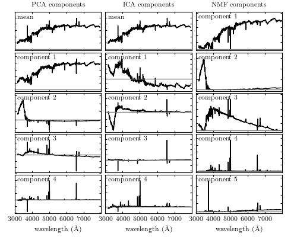

SDSS spectra Decompositions¶
Comparison of PCA, ICA, and NMF decompositions of SDSS spectra
@pickle_results: using precomputed results from 'spec_decompositions.pkl'
# Author: Jake VanderPlas <vanderplas@astro.washington.edu>
# License: BSD
# The figure produced by this code is published in the textbook
# "Statistics, Data Mining, and Machine Learning in Astronomy" (2013)
# For more information, see http://astroML.github.com
import numpy as np
from matplotlib import pyplot as plt
from sklearn.decomposition import NMF
from sklearn.decomposition import FastICA
from sklearn.decomposition import RandomizedPCA
from astroML.datasets import sdss_corrected_spectra
from astroML.decorators import pickle_results
#------------------------------------------------------------
# Download data
data = sdss_corrected_spectra.fetch_sdss_corrected_spectra()
spectra = sdss_corrected_spectra.reconstruct_spectra(data)
wavelengths = sdss_corrected_spectra.compute_wavelengths(data)
#----------------------------------------------------------------------
# Compute PCA, ICA, and NMF components
# we'll save the results so that they can be re-used
@pickle_results('spec_decompositions.pkl')
def compute_PCA_ICA_NMF(n_components=5):
spec_mean = spectra.mean(0)
# PCA: use randomized PCA for speed
pca = RandomizedPCA(n_components - 1)
pca.fit(spectra)
pca_comp = np.vstack([spec_mean,
pca.components_])
# ICA treats sequential observations as related. Because of this, we need
# to fit with the transpose of the spectra
ica = FastICA(n_components - 1)
ica.fit(spectra.T)
ica_comp = np.vstack([spec_mean,
ica.transform(spectra.T).T])
# NMF requires all elements of the input to be greater than zero
spectra[spectra < 0] = 0
nmf = NMF(n_components)
nmf.fit(spectra)
nmf_comp = nmf.components_
return pca_comp, ica_comp, nmf_comp
n_components = 5
decompositions = compute_PCA_ICA_NMF(n_components)
#----------------------------------------------------------------------
# Plot the results
fig = plt.figure(figsize=(10, 8))
fig.subplots_adjust(left=0.05, right=0.95, wspace=0.05,
bottom=0.1, top=0.95, hspace=0.05)
titles = ['PCA components', 'ICA components', 'NMF components']
for i, comp in enumerate(decompositions):
for j in range(n_components):
ax = fig.add_subplot(n_components, 3, 3 * j + 1 + i)
ax.yaxis.set_major_formatter(plt.NullFormatter())
ax.xaxis.set_major_locator(plt.MultipleLocator(1000))
if j < n_components - 1:
ax.xaxis.set_major_formatter(plt.NullFormatter())
else:
ax.set_xlabel(r'wavelength $(\AA)$')
ax.plot(wavelengths, comp[j], '-k', lw=1)
# plot zero line
xlim = [3000, 7999]
ax.plot(xlim, [0, 0], '-', c='gray', lw=1)
ax.set_xlim(xlim)
if j == 0:
ax.set_title(titles[i], fontsize='medium')
if titles[i].startswith('PCA') or titles[i].startswith('ICA'):
if j == 0:
label = 'mean'
else:
label = 'component %i' % j
else:
label = 'component %i' % (j + 1)
ax.text(0.02, 0.95, label, transform=ax.transAxes,
ha='left', va='top', bbox=dict(ec='w', fc='w'),
fontsize='small')
# adjust y limits
ylim = plt.ylim()
dy = 0.05 * (ylim[1] - ylim[0])
ax.set_ylim(ylim[0] - dy, ylim[1] + 4 * dy)
plt.show()